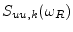
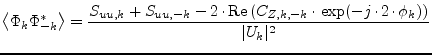
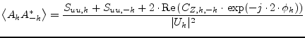

The harmonic balance noise analysis calculates the noise power spectral
density
 at the noise frequency  of the
of the
 -th harmonic. The SSB phase and amplitude noise normalized to the
carrier can be obtained by using the symmetry between positive and
negative harmonic numbers:
-th harmonic. The SSB phase and amplitude noise normalized to the
carrier can be obtained by using the symmetry between positive and
negative harmonic numbers:
|  | (8.6) |
|  | (8.7) |